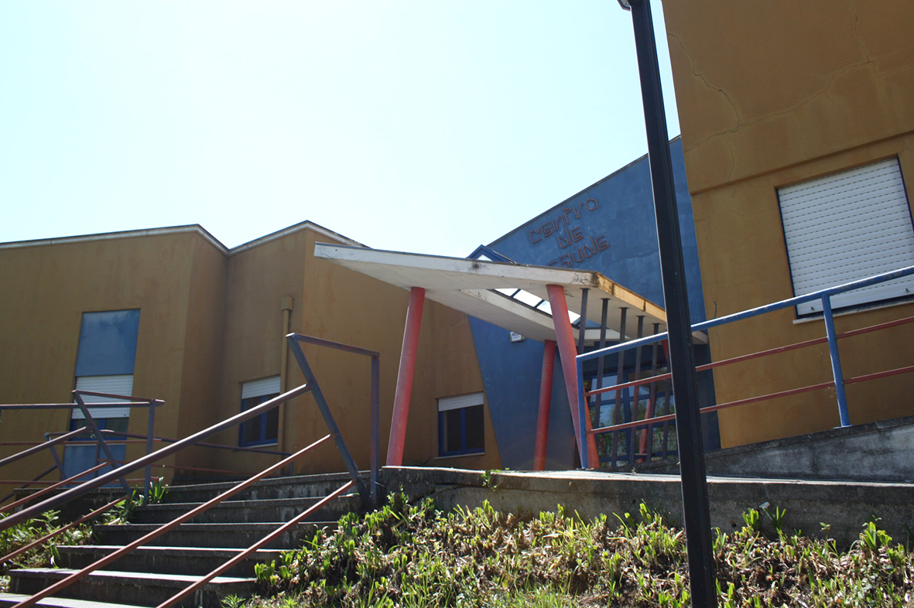

CENTRO DE SAÚDE DE ALBERGARIA-A-VELHA
faz parte do Agrupamento de Centros de Saúde Baixo Vouga, tendo sido criada em Dezembro de 2010.É uma unidade de prestação de cuidados de saúde, apoio psicológico e social, de âmbito domiciliário e comunitário, direcionando a sua ação para pessoas e grupos mais vulneráveis em situação de maior risco ou dependência física funcional ou de doença, que requeira acompanhamento próximo.
Pretende contribuir para a melhoria do estado de saúde da população da sua área geográfica de intervenção, visando a obtenção de ganhos em saúde e concorrendo de um modo direto para o cumprimento da missão do Agrupamento de Centros de Saúde (ACES) Baixo Vouga, em que se integra.
